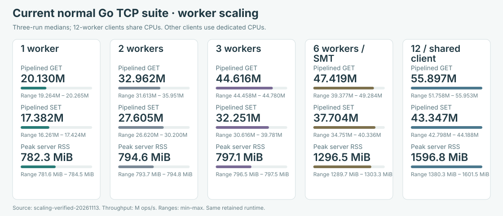
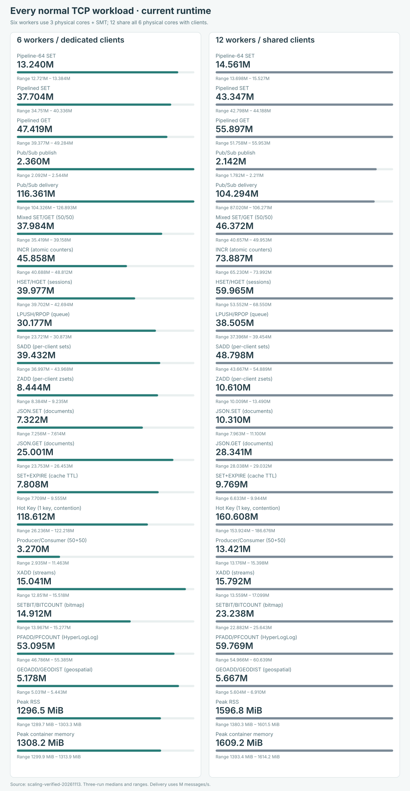
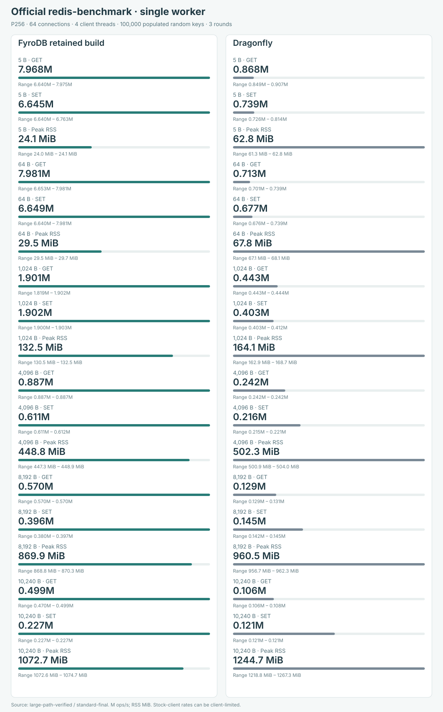
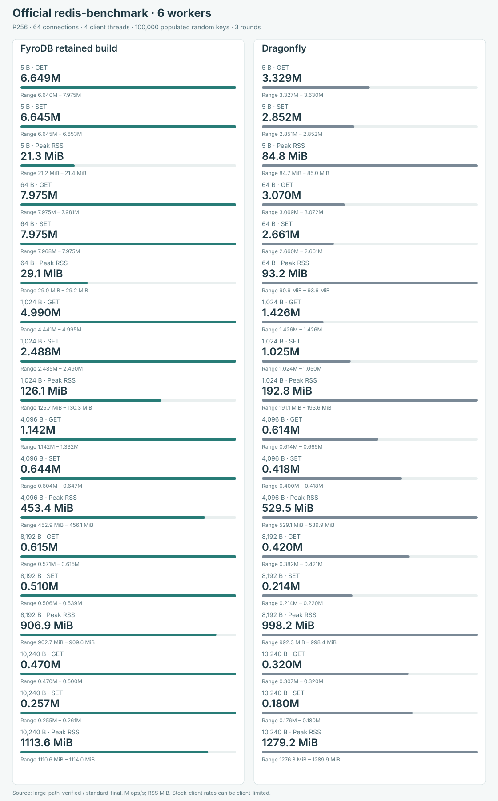
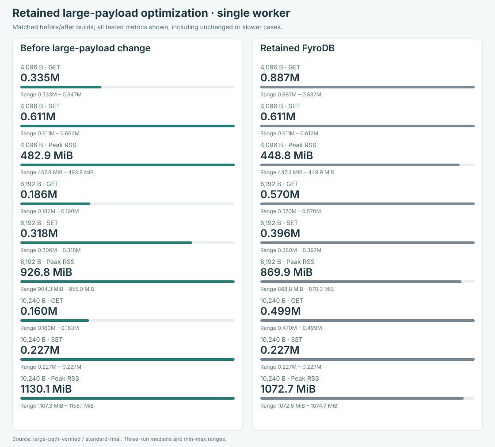
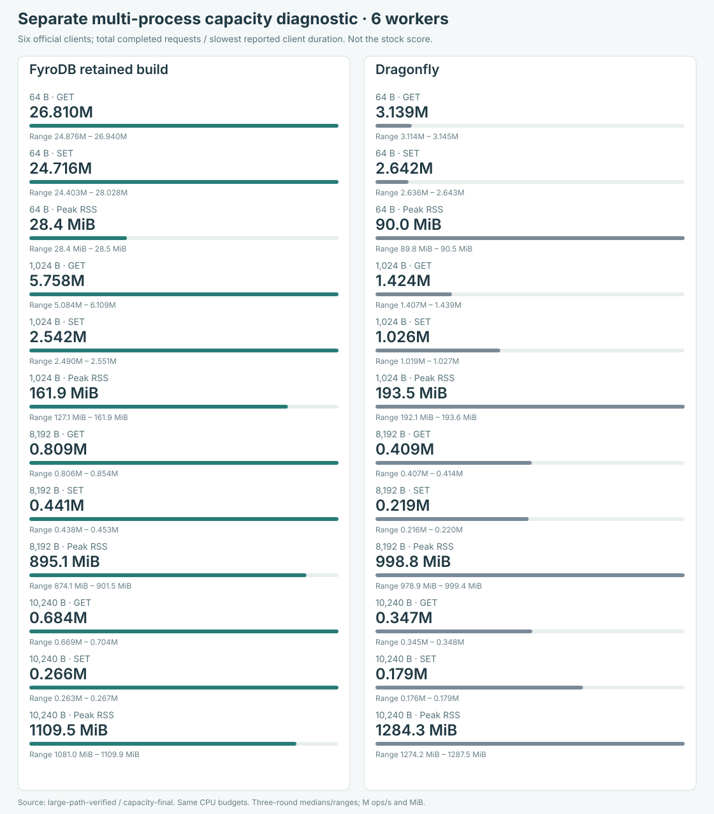
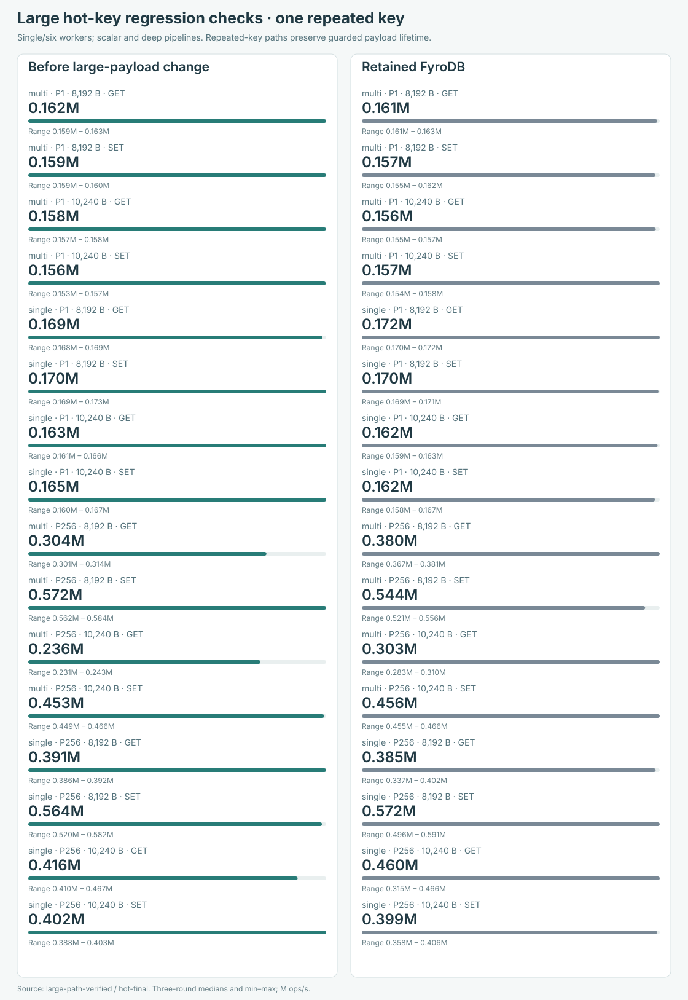
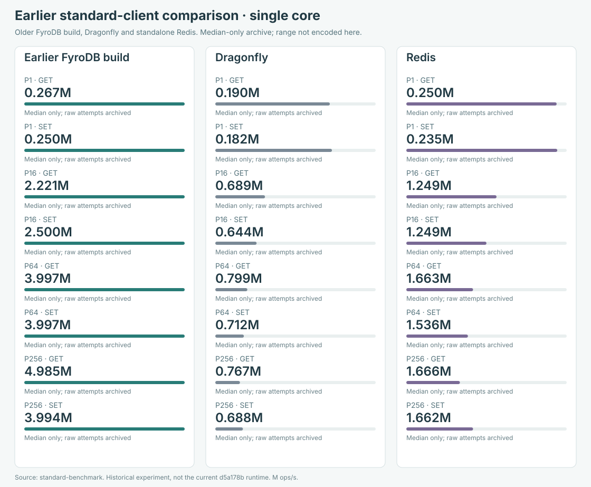
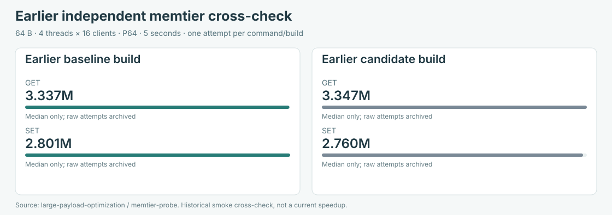
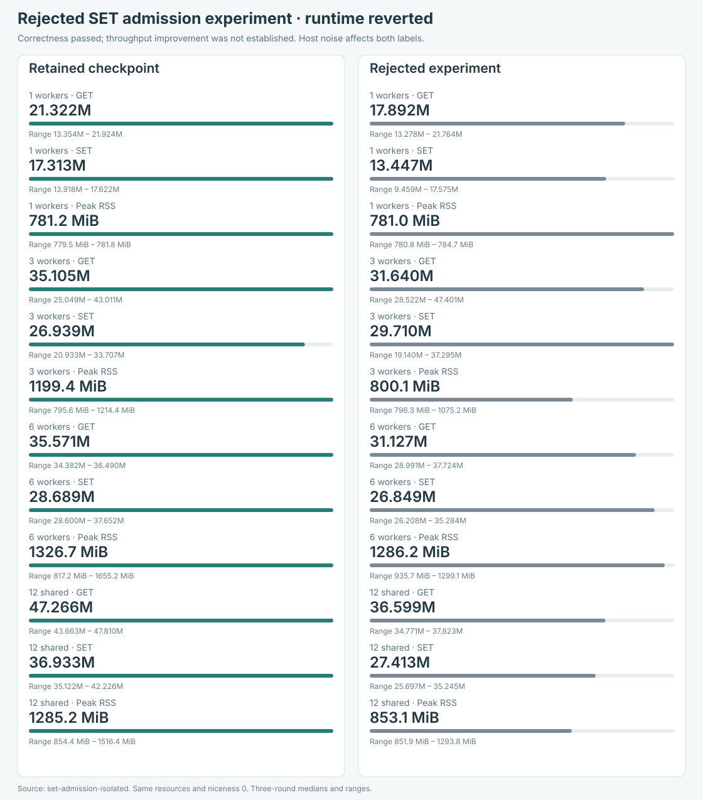

FyroDB benchmark evidence
Current retained runtime: checkpoint d5a178b. Normal Go TCP results appear first. Other clients, payloads and CPU budgets are separate experiments.
The latest SET admission experiment was reverted: correctness passed but a reliable throughput gain was not established. Historical best-of-three rates remain historical. No measurements were rerun for this documentation update.
Current normal TCP worker sweep

SVG: normal-scaling.svg. Full ranges and provenance are in the downloads.
All 20 normal TCP workloads

SVG: normal-all.svg. Full ranges and provenance are in the downloads.
Official client, single worker

SVG: stock-single.svg. Full ranges and provenance are in the downloads.
Official client, six workers

SVG: stock-multi.svg. Full ranges and provenance are in the downloads.
Retained large-payload before/after

SVG: large-payload.svg. Full ranges and provenance are in the downloads.
Separate multi-process capacity

SVG: capacity.svg. Full ranges and provenance are in the downloads.
Large hot-key guards

SVG: hot-key.svg. Full ranges and provenance are in the downloads.
Earlier standalone Redis comparison

SVG: redis-history.svg. Full ranges and provenance are in the downloads.
Earlier independent memtier probe

SVG: memtier-history.svg. Full ranges and provenance are in the downloads.
Rejected admission experiment

SVG: rejected-admission.svg. Full ranges and provenance are in the downloads.
All archived measurement campaigns
84 timed samples plus 8 full Go warmup suites in the latest rejected experiment; 789 retained-source tests passed, zero failures, three existing performance probes ignored. RSS and container memory are distinct metrics; no fixed RAM ceiling is claimed.